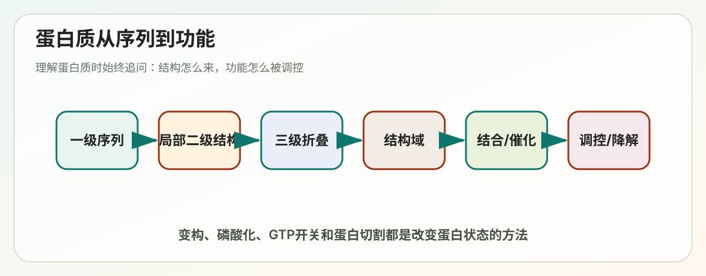
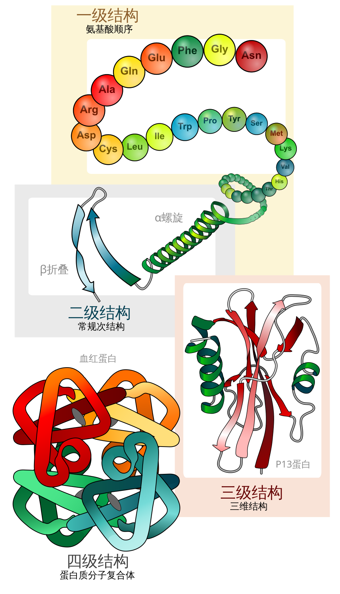

Lecture 03
第3讲学习讲义：Protein Structure and Function


对应课件：Lecture_3_Protein_Structure_and_Function.pdf
如果说 DNA 更像“信息仓库”，那蛋白质就是细胞里真正的大型执行系统。这一讲是整门课里最核心的部分之一，因为后面几乎所有机制最后都会落到“某种蛋白在做什么”。
你需要先抓住一句话：蛋白质的功能来自结构，结构又主要由氨基酸序列决定。
这讲的核心问题
- 为什么不同蛋白能执行完全不同的功能？
- 一条氨基酸链怎么折叠成复杂三维结构？
- 蛋白质怎样和别的分子结合？
- 细胞怎样调控蛋白质的活性、数量和命运？
一、蛋白质为什么如此重要
蛋白质是细胞干重中的主要成分，这不是一句废话，而是在告诉你：
- 细胞不是“DNA 主导一切”的静态系统。
- 真正执行任务的大头是蛋白质。
蛋白质的典型功能包括：
- 结构支撑。
- 催化反应。
- 物质运输。
- 运动。
- 信号接收与传递。
- 基因表达调控。
- 组装大分子机器。
一个蛋白可以有多个功能，多个蛋白也可以组装成一个复合体共同工作。
二、四级结构：理解蛋白质结构的标准框架
1. 一级结构 primary structure
一级结构就是氨基酸的线性排列顺序。
这一层最重要，因为：
- 序列决定后续折叠倾向。
- 单个氨基酸变化就可能改变功能。
2. 二级结构 secondary structure
二级结构是局部规则折叠，主要由主链间氢键稳定。
最重要的两类：
- α-helix，α 螺旋。
- β-sheet，β 折叠。
要点：
- 二级结构主要看主链。
- 侧链更像是在决定“这段序列适不适合形成这种结构”。
3. 三级结构 tertiary structure
三级结构是整条多肽链的整体三维折叠。
它由多种作用共同稳定：
- 疏水效应。
- 氢键。
- 静电相互作用。
- 范德华力。
- 有时还包括二硫键。
4. 四级结构 quaternary structure
四级结构是多条多肽链组装成复合体。
例如：
- 血红蛋白。
- 很多酶复合物。
- 细胞骨架结构。
四级结构的意义在于：
- 允许协同效应。
- 提高调控复杂度。
- 形成大型分子机器。
三、为什么序列能决定结构
课件反复强调：The shape of a protein is specified by its amino acid sequence。
意思是：
- 氨基酸的排列决定哪些基团会相互靠近。
- 决定哪些区域疏水、哪些区域带电、哪些区域容易形成氢键。
- 因而决定最终折叠路径和稳定构象。
更完整地说：
- 序列提供主要信息。
- 细胞环境、伴侣蛋白和翻译过程也会影响折叠效率与结果。
四、蛋白质为什么会折叠
你可以把折叠理解为“寻找更稳定、更低自由能的状态”。
常见驱动力包括：
- 疏水侧链埋入内部，减少与水接触。
- 形成更多有利的氢键和静电作用。
- 降低整体自由能。
但要注意：
- 折叠不是随便乱卷。
- 蛋白质必须在众多可能构象中到达功能相关构象。
五、伴侣蛋白 chaperone：细胞如何帮助蛋白正确折叠
in vivo 的折叠常由 chaperones 促进。这说明一个现实：
- 蛋白质在试管里能否自己折叠是一回事。
- 在拥挤的细胞环境中能否顺利折叠是另一回事。
伴侣蛋白的主要作用不是“告诉蛋白应该长什么样”，而是：
- 防止新生肽链错误聚集。
- 提供相对隔离的折叠环境。
- 提高折叠成功率。
六、二级结构重点：α 螺旋与 β 折叠
1. α 螺旋
特点：
- 主链盘旋成螺旋。
- 氢键沿螺旋内部规则形成。
- 侧链向外伸出。
2. β 折叠
由多段 β 链通过氢键排成片层。
可分为：
- 平行 parallel。
- 反平行 antiparallel。
3. 为什么脯氨酸常打断二级结构
原因是：
- 脯氨酸结构特殊，构象受限。
- 主链氢键形成能力受影响。
因此它常作为转角或打断规则结构的“拐点”。
七、三级结构、结构域与蛋白家族
1. 常见整体形态
初学时你可以粗略理解为：
- 球状。
- 纤维状。
- 膜相关或复合型。
2. 结构域 domain
结构域是蛋白中能相对独立折叠、并常承担特定功能的部分。
很多蛋白并不是“一个整体只做一件事”，而是：
- 一个 domain 负责识别 DNA。
- 一个 domain 负责酶活性。
- 一个 domain 负责和其他蛋白结合。
3. 蛋白家族 protein family
如果一组蛋白来源于共同祖先，并保留相似序列或结构特征，就构成蛋白家族。
这能帮助我们：
- 通过序列推断功能。
- 通过保守位点寻找关键残基。
- 理解进化上的功能分化。
八、蛋白质组装：从单体到超分子机器
课件中提到：
- 某些球状蛋白可形成长螺旋丝。
- 很多细胞结构可自组装。
- 病毒衣壳是组装的经典例子。
1. 自组装 self-assembly
自组装的意思不是“自动凭空形成”，而是：
- 组分本身带有足够的化学和结构信息。
- 在合适条件下能自发达到较低能量的有序状态。
2. 为什么还需要 assembly factors
虽然很多结构有自组装能力，但在细胞里：
- 环境拥挤。
- 竞争反应多。
- 时空顺序重要。
所以常常需要辅助装配因子提高效率和准确性。
九、蛋白质结合：功能从“接触”开始
几乎所有蛋白质功能都依赖结合：
- 酶要结合底物。
- 受体要结合配体。
- 转录因子要结合 DNA。
- 抗体要结合抗原。
结合的本质上是大量非共价相互作用的总和，包括：
- 氢键。
- 静电作用。
- 疏水接触。
- 范德华力。
特异性来自互补性：
- 形状匹配。
- 电荷匹配。
- 化学基团位置匹配。
十、结合强度：平衡常数和 Kd
你不需要一上来推公式，但要懂概念：
- 结合不是绝对的“绑上就不放”。
- 而是结合与解离动态平衡。
Kd 越小，通常表示：
- 在较低浓度下就能形成较多复合物。
- 亲和力更强。
但也要注意：
- 亲和力强不等于生物学效果一定更好。
- 有时可逆、适中的结合更适合调控。
十一、酶催化：蛋白质最经典的功能之一
1. 酶为什么能加速反应
酶并不是“给反应加能量”，而是：
- 降低活化能。
- 稳定过渡态。
- 把底物摆到更合适的位置。
2. 过渡态稳定是关键
这解释了：
- 为什么酶对底物类似物敏感。
- 为什么过渡态类似物往往是好抑制剂。
3. 酸碱催化
酶活性位点中的某些氨基酸残基可以：
- 提供质子。
- 接受质子。
从而促进反应中间步骤发生。
4. 溶菌酶 lysozyme
课件用 lysozyme 举例，是为了说明：
- 酶如何精准识别底物。
- 如何通过活性位点微环境促进键断裂。
十二、蛋白质功能如何被调控
1. 先控制蛋白数量
蛋白水平的稳态受很多步骤影响：
- mRNA 转录多少。
- mRNA 稳定性如何。
- 翻译效率如何。
- 蛋白半衰期多长。
2. 变构调控 allostery
变构的核心思想是：
- 一个蛋白有不止一个结合位点。
- 一个部位的结合会改变另一个部位的性质。
这使蛋白成为“可调节装置”而不是死板工具。
3. GTP 结合蛋白
这是细胞调控里很重要的一套开关：
- 结合 GTP 时常为活化状态。
- 水解成 GDP 后常变为失活状态。
GEF 促进 GDP 换成 GTP，相当于“开”。
GAP 促进 GTP 水解，相当于“关”。
4. 共价修饰
蛋白常通过共价修饰改变状态，例如：
- 磷酸化。
- 乙酰化。
- 泛素化。
这些修饰可以影响：
- 活性。
- 定位。
- 稳定性。
- 与其他分子的结合能力。
5. 蛋白切割 proteolytic cleavage
有些蛋白刚合成时不是最终活性形式，需要被切开后激活。
这类机制的优点是：
- 前体形式更安全。
- 激活时间和地点更可控。
十三、蛋白质降解也属于调控
细胞可以通过：
- 溶酶体途径。
- 泛素-蛋白酶体途径。
来清除不需要或损伤的蛋白。
十四、把这讲用一句话串起来
蛋白质由氨基酸序列决定折叠方式，折叠产生结构域和三维界面，三维结构决定结合与催化能力，而细胞再通过变构、GTP 开关、共价修饰、切割和降解等方式动态调控蛋白质功能。
十五、常见误区
- “蛋白质功能只由一级序列决定”不完整。更准确是序列提供主要信息，但细胞环境也影响折叠与状态。
- “结合越强越好”不对。很多调控要求可逆结合。
- “蛋白质只要折叠好了就一直不变”不对。蛋白质常在不同构象间切换。
- “酶让所有反应都能发生”不对。酶主要改变速率，不改变反应的热力学终点。
十六、你必须会的关键词
- Primary structure：一级结构。
- Secondary structure：二级结构。
- Tertiary structure：三级结构。
- Quaternary structure：四级结构。
- Domain：结构域。
- Chaperone：伴侣蛋白。
- Allostery：变构调控。
- Affinity：亲和力。
- Transition state：过渡态。
- GEF / GAP：GTP 开关调控因子。
十七、自测题
1. 为什么说蛋白质的功能来自结构？
答题关键：
- 结构决定结合界面、活性位点、定位和动态变化能力。
2. 为什么疏水效应对蛋白质折叠很重要？
答题关键：
- 疏水残基倾向埋入内部，降低暴露于水的面积。
3. 变构调控的本质是什么？
答题关键：
- 一个位点事件改变另一个位点性质。
4. GEF 和 GAP 分别起什么作用？
答题关键：
- GEF 开启 GTP 酶。
- GAP 促进关闭。
十八、考前速记版
- 序列决定结构，结构决定功能。
- 二级结构核心是 α 螺旋和 β 折叠。
- 结构域是复杂蛋白的重要功能单位。
- 结合依赖多种非共价作用和表面互补性。
- 酶通过稳定过渡态降低活化能。
- 蛋白功能可通过变构、修饰、切割和降解调控。
十九、深入扩展：蛋白质折叠为什么既“自发”又“容易出错”
这看上去像矛盾，其实不矛盾。
为什么说折叠是自发的
因为序列通常带有达到较低自由能构象所需的大部分信息。
为什么又容易出错
因为真实细胞环境不是稀溶液，而是：
- 分子极其拥挤。
- 新生肽链不断产生。
- 很多疏水面短暂暴露。
于是蛋白质在找到正确折叠路径前，也可能先碰到错误伙伴并聚集。
这就是为什么细胞需要分子伴侣和质量控制系统。
二十、为什么结构域是理解蛋白的最好单位之一
因为很多复杂蛋白不是“从头到尾只干一件事”，而是像模块化机器。
一个蛋白可以有：
- 催化结构域。
- DNA 结合结构域。
- 膜定位结构域。
- 蛋白互作结构域。
这样一来，进化也更容易进行“模块重组”：
- 同一个结构域被放进不同蛋白背景里。
- 产生新组合和新功能。
二十一、为什么 allostery 是生物调控的理想方案
变构调控的好处是：
- 不需要每次都重新合成或降解蛋白。
- 可以快速、可逆地切换活性。
- 能把代谢状态或信号状态直接转成酶活变化。
因此 allostery 特别适合：
- 代谢通路关键酶。
- 信号传导开关。
- 需要灵敏响应的调节节点。
二十二、GTP 结合蛋白为什么像分子开关
因为它们天然带有两个稳定状态：
- GTP 结合态，通常更接近“开”。
- GDP 结合态，通常更接近“关”。
再加上 GEF 和 GAP：
- GEF 帮它开机。
- GAP 帮它关机。
于是细胞就得到了一套：
- 可定向开启。
- 可定向关闭。
- 可与上游下游信号衔接。
的调控模块。
二十三、为什么蛋白切割能作为激活机制
因为有些蛋白如果一直保持活性会非常危险，例如：
- 消化酶。
- 血液凝固相关酶。
- 某些激素前体。
先以前体形式存在，等到合适时间地点再切割激活，可以显著降低误伤风险。
二十四、学习蛋白质最容易忽视的一点
蛋白不是“做出来就结束”的静态物件，而是：
- 会折叠。
- 会切换构象。
- 会结合伙伴。
- 会被修饰。
- 会被运输。
- 会被降解。
所以真正的蛋白质生物学，研究的是一个动态生命史，而不是一张静态三维结构图。